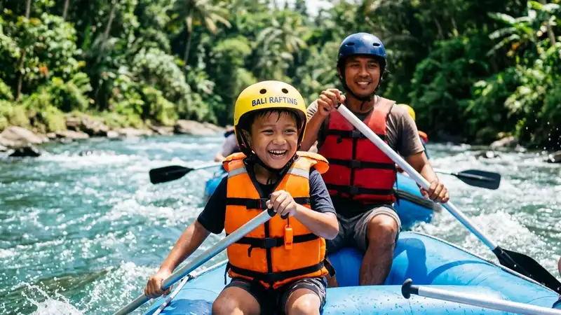

Rafting anak adalah kegiatan arung jeram yang diikuti peserta usia anak-anak pada jalur sungai bergrade rendah dengan pengawasan ketat, perlengkapan keselamatan khusus, dan pendampingan pemandu berpengalaman menangani peserta muda.
- Rafting anak memerlukan jalur sungai dengan grade satu hingga dua agar risiko tetap terkendali.
- Usia minimal peserta anak ditentukan oleh masing-masing operator berdasarkan kondisi sungai.
- Perlengkapan keselamatan seperti pelampung dan helm untuk anak harus tersedia dalam ukuran yang sesuai.
- Persiapan fisik dan mental anak sebelum kegiatan turut menentukan kenyamanan selama rafting.
- Pendampingan orang tua tetap penting meskipun anak sudah didampingi pemandu profesional.
Apa Itu Rafting Anak?
Rafting anak merujuk pada partisipasi peserta usia anak dalam kegiatan arung jeram yang telah disesuaikan tingkat kesulitannya, biasanya menggunakan segmen sungai dengan arus yang lebih tenang dibandingkan jalur untuk peserta dewasa berpengalaman.
Operator wisata yang menyediakan layanan ini umumnya memiliki kebijakan khusus, termasuk pembatasan usia, penyesuaian ukuran perlengkapan, dan protokol pengawasan tambahan. Rafting anak berbeda dari rafting reguler terutama dalam aspek pemilihan jalur, rasio pemandu, dan intensitas briefing keselamatan yang diberikan sebelum kegiatan dimulai.
Berapa Usia Minimal Anak untuk Mengikuti Rafting?
Usia minimal anak untuk rafting umumnya berada di kisaran usia sekolah dasar, meskipun angka pastinya berbeda-beda tergantung kebijakan operator dan karakter sungai yang digunakan.
Beberapa operator menetapkan batas usia berdasarkan tinggi dan berat badan anak, bukan semata-mata usia, karena hal ini lebih relevan dengan kesesuaian ukuran pelampung dan kemampuan anak menopang tubuhnya sendiri di dalam perahu. Orang tua disarankan menghubungi langsung operator untuk memastikan kebijakan usia yang berlaku di lokasi yang dituju.
Apa Saja Perlengkapan Keselamatan Khusus untuk Rafting Anak?
Perlengkapan keselamatan khusus untuk rafting anak meliputi pelampung berukuran anak, helm yang pas di kepala, serta pengikat tambahan pada perahu untuk memastikan posisi duduk anak tetap stabil selama pengarungan.
- Pelampung ukuran anak. Pelampung dewasa yang terlalu besar dapat mengurangi efektivitas perlindungan dan berisiko lepas saat anak terjatuh ke air.
- Helm yang pas. Helm harus terpasang kencang namun tetap nyaman agar tidak mengganggu pandangan anak selama kegiatan.
- Tali pengaman tambahan pada perahu. Beberapa operator menyediakan pegangan atau tali tambahan khusus di posisi duduk anak.
- Sepatu air tertutup. Alas kaki tertutup membantu melindungi kaki anak dari batu dan permukaan sungai yang licin.
Bagaimana Cara Mempersiapkan Anak Sebelum Rafting Pertama Kali?
Persiapan sebelum rafting pertama kali meliputi memastikan anak dalam kondisi fisik sehat, memberikan penjelasan sederhana tentang kegiatan, serta melatih anak mengenali instruksi dasar pemandu sebelum turun ke sungai.
Orang tua sebaiknya menjelaskan kepada anak apa yang akan mereka alami, termasuk sensasi basah, guncangan perahu saat melewati jeram, serta pentingnya mendengarkan instruksi pemandu. Penjelasan yang tenang dan tidak menakut-nakuti dapat membantu anak merasa lebih siap dan percaya diri saat kegiatan dimulai. Memastikan anak sarapan cukup dan beristirahat dengan baik pada malam sebelumnya juga membantu menjaga stamina selama pengarungan.
Apa Saja Tanda Anak Belum Siap Mengikuti Rafting?
Tanda anak belum siap mengikuti rafting meliputi rasa takut berlebihan terhadap air, kondisi fisik yang belum fit, serta kesulitan mengikuti instruksi sederhana dari orang dewasa selama sesi briefing berlangsung.
Jika anak menunjukkan kecemasan berlebihan saat berada di dekat air atau memiliki riwayat kesulitan bernapas, sebaiknya orang tua mempertimbangkan kembali rencana rafting atau berkonsultasi dengan operator mengenai opsi jalur yang lebih ringan. Memaksakan anak yang belum siap secara mental berisiko membuat pengalaman menjadi trauma alih-alih menyenangkan.
Secara umum, operator rafting yang berpengalaman menangani peserta anak akan melakukan asesmen singkat sebelum keberangkatan, termasuk mengamati kesiapan emosional anak, sebagai bagian dari standar keselamatan tambahan pada periode operasional mereka.
Bagi keluarga yang ingin melihat rekomendasi lokasi yang ramah untuk membawa anak, artikel wisata rafting anak membahas destinasi-destinasi yang sesuai. Panduan menyeluruh mengenai konsep rafting bersama seluruh anggota keluarga dapat dibaca pada artikel rafting keluarga.
FAQ
Apakah anak yang belum bisa berenang boleh ikut rafting?
Anak yang belum bisa berenang tetap dapat mengikuti rafting selama mengenakan pelampung yang sesuai dan didampingi pemandu, meskipun kenyamanan emosional anak di air tetap perlu dipertimbangkan terlebih dahulu.
Apakah rafting anak berbeda jalurnya dengan rafting dewasa?
Ya, rafting anak umumnya menggunakan segmen sungai dengan grade lebih rendah dibandingkan jalur yang digunakan untuk peserta dewasa berpengalaman.
Apa yang harus dilakukan jika anak menangis saat briefing?
Orang tua dapat menenangkan anak terlebih dahulu dan berkonsultasi dengan pemandu apakah kegiatan tetap dapat dilanjutkan atau perlu ditunda hingga anak merasa lebih siap.
Arya
Penulis artikel yang sudah berpengalaman di dalam dunia wisata outbound Batu Malang.